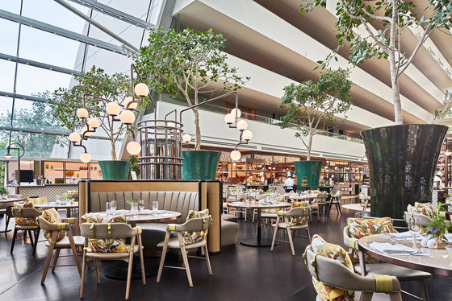
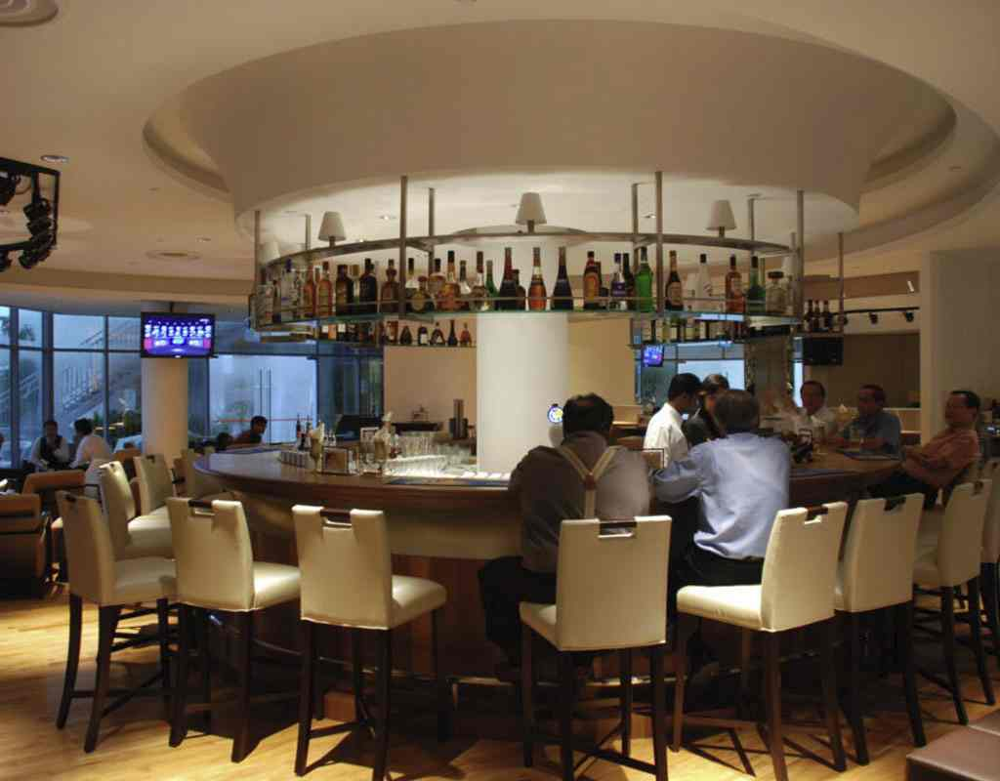

Work Experience
From August 2023 to October 2023, I worked as a Food Server at Marina Bay Sands Rise Restaurant. My responsibilities included setting up and closing the restaurant, handling and assisting in food serving, and attending to customers by taking their orders. I ensured the maintenance of food hygiene and sanitation standards and carried out various tasks assigned by the Restaurant Manager. This role enhanced my communication, organizational, and multitasking skills, providing a solid foundation for my future endeavors in the hospitality industry.
From December 2023 to March 2024, I worked as a Food Server and Bartender at NUSS Café On The Ridge. I was responsible for daily operations, serving customers food and drinks, and removing and cleaning tables from used dishes. This role involved significant customer interaction, allowing me to enhance my communication, listening and interpersonal skills which are usefull to have. Additionally, I developed drink crafting skills, which added a creative aspect to my work and contributed to a positive customer experience and work statisfication to my work life.